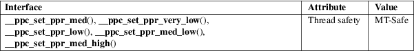

Programmer’s Manual"
__ppc_set_ppr_med, __ppc_set_ppr_very_low, __ppc_set_ppr_low, __ppc_set_ppr_med_low, __ppc_set_ppr_med_high − Set the Program Priority Register
Standard C library (libc, −lc)
#include <sys/platform/ppc.h>
void
__ppc_set_ppr_med(void);
void __ppc_set_ppr_very_low(void);
void __ppc_set_ppr_low(void);
void __ppc_set_ppr_med_low(void);
void __ppc_set_ppr_med_high(void);
These functions provide access to the Program Priority Register (PPR) on the Power architecture.
The PPR is a
64-bit register that controls the program’s priority.
By adjusting the PPR value the programmer may improve system
throughput by causing system resources to be used more
efficiently, especially in contention situations. The
available unprivileged states are covered by the following
functions:
__ppc_set_ppr_med()
sets the Program Priority Register value to medium (default).
__ppc_set_ppr_very_low()
sets the Program Priority Register value to very low.
__ppc_set_ppr_low()
sets the Program Priority Register value to low.
__ppc_set_ppr_med_low()
sets the Program Priority Register value to medium low.
The privileged
state medium high may also be set during certain time
intervals by problem-state (unprivileged) programs, with the
following function:
__ppc_set_ppr_med_high()
sets the Program Priority to medium high.
If the program priority is medium high when the time interval expires or if an attempt is made to set the priority to medium high when it is not allowed, the priority is set to medium.
For an explanation of the terms used in this section, see attributes(7).

GNU.
__ppc_set_ppr_med()
__ppc_set_ppr_low()
__ppc_set_ppr_med_low()
glibc 2.18.
__ppc_set_ppr_very_low()
__ppc_set_ppr_med_high()
glibc 2.23.
The functions __ppc_set_ppr_very_low() and __ppc_set_ppr_med_high() will be defined by <sys/platform/ppc.h> if _ARCH_PWR8 is defined. Availability of these functions can be tested using #ifdef _ARCH_PWR8.
__ppc_yield(3)
Power ISA, Book II - Section 3.1 (Program Priority Registers)